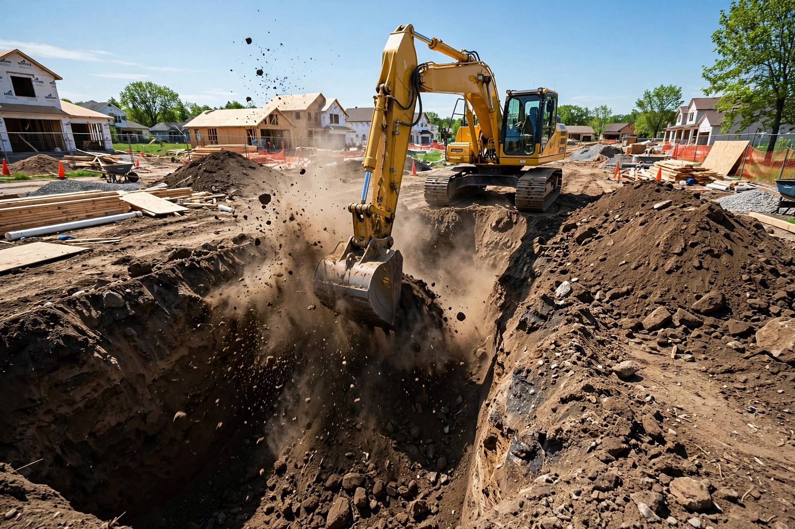
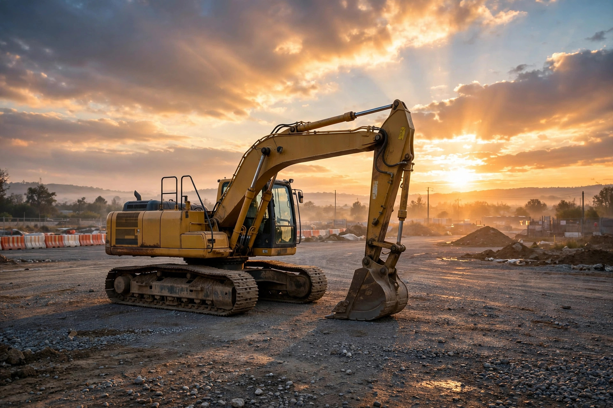
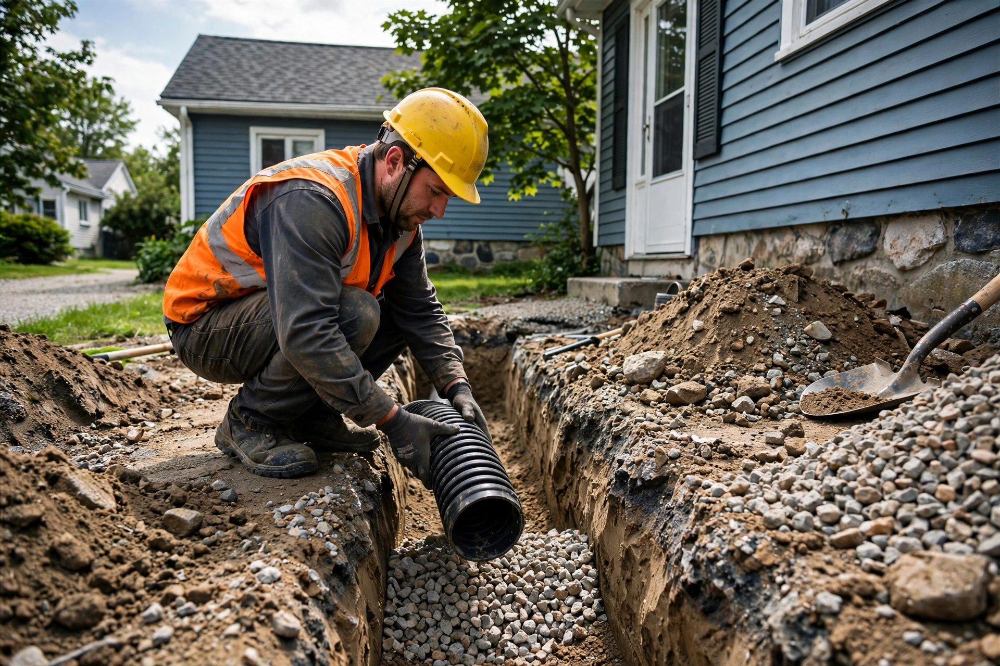
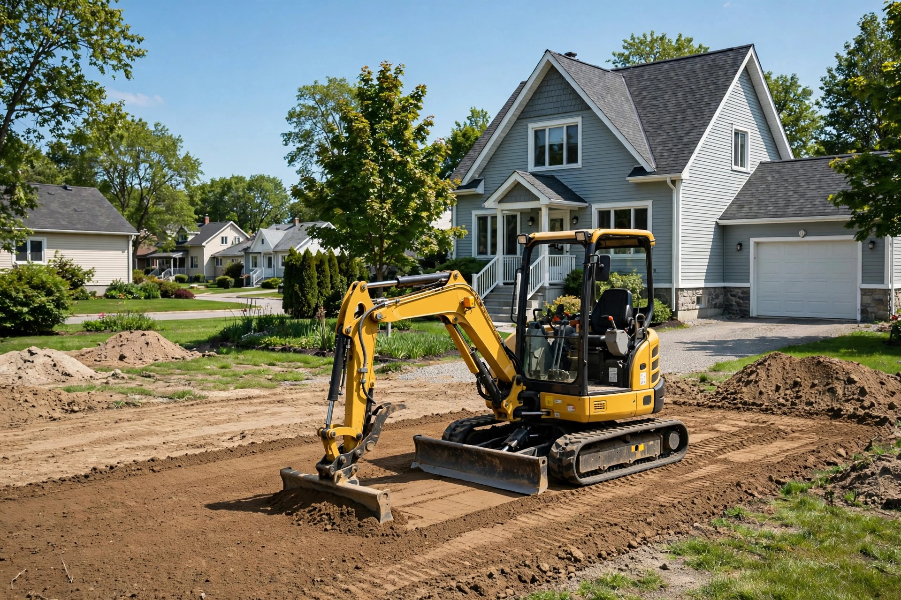

Excavation de fondations
Creusage et remblai de fondations pour maisons neuves, agrandissements et garages.

Saint-Jean-sur-Richelieu, Québec · Excavation · Démolition · Transport en vrac
Excavation, démolition et transport en vrac à Saint-Jean-sur-Richelieu — entrepreneur licencié RBQ. Devis gratuit, travail sérieux.
Notre engagement
Excavation, démolition, transport en vrac — un seul appel suffit pour lancer votre chantier.
Ce que nous faisons
Creusage et remblai de fondations pour maisons neuves, agrandissements et garages.
Installation et remplacement de drains français pour garder votre sous-sol au sec.
Préparation et nivellement de terrain pour vos projets résidentiels et commerciaux.
Démolition contrôlée de structures avec évacuation complète des débris.
Livraison de terre, sable, pierre et gravier directement sur votre chantier.
Branchements et réparations d'aqueduc et d'égout, raccordements conformes.

Pourquoi nous choisir
On croit aux choses simples : un prix expliqué d'avance, un chantier propre et un travail fait dans les règles. Vous savez toujours où en est votre projet.
Nos chantiers en images


Ils en parlent
Bon à savoir
Lundi au vendredi de 8 h à 18 h. Samedi et dimanche : fermé.
Oui — appelez-nous au (450) 346-3215 et on évalue votre projet sans frais.
Excavation de fondations, drain français, terrassement et nivellement, démolition, transport en vrac, ainsi que les branchements d'aqueduc et d'égout.
Oui — notre licence RBQ est le 1467-6050-30.
Venez nous voir